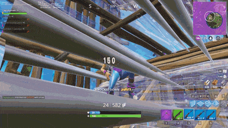

I've mentioned previously in the building section a lot about editing, just like building, you can edit the builds you place or even before you place them and this is just as important of a skill you need to be better than the average player in fortnite. Every single building piece can be edited into anything, to edit, the default key to press is "G"however, this key can adjustable to whatever button you want. To edit a building piece properly, you will need to press your edit key, use your mouse and left click on the things you want to edit out, then press your edit key again to confirm.
When you place down a build, only you can edit that build unless you are playing duos or squads, then your partners can edit the build too. You cannot edit builds that were placed by other enemies and the only way of getting access, is by destroying their build and replacing your own. When you edit walls, floors, stairs, you can only edit it within a certain distance averaged around 1m ingame however, the pyramid can be edited within a distance of around 1.5m-2m ingame. There are only certain ways that certain pieces can be edited, and here'savideo showcasing all the possible ways every building piece can be edited.
If you were to box yourself with walls and a floor above you, there would be no way out besides breaking it however, you can edit your way out, by eiether editing a way out through the wall or through the floor above you. This is just a very basic scenario however, when facing your opponents, editing and outbuilding will be the key to beating them, here'san example: you have an opponent in your box, you can edit a window to shoot them, then reclose the window, so you'reprotected. When fighting a good or even a decent player, 99% of the time, you will defeat them by editing them out.
In fortnite there is a concept of"Phasing" this basically means that a player is going through a building piece. You can phase through every building piece but most of the time it will be the pyramid and stair that you or the opponent will most likely be phasing through. When you phase through a build there will be a glowing yellow light to symbolize that you are phasing, but when you phase, act as if the building piece didn't exist meaning your opponent can shoot you and can go through the phasing build. While any one is phasing, no one can edit until the piece is solid.
Return to the top of the page